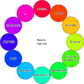
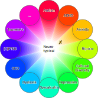
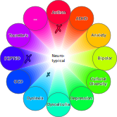

# Neurodiversity ## Flavors, Challenges, Approaches [Ole Mussmann](mailto:o.mussmann@esciencecenter.nl) Note: Not touching upon: - how much society ties value of human beings to their productivity - are neurodivergent employees more or less productive - they have shitty organizational skills - they have superpowers - NLeSC is not a charity
# Terminology
## Spectrum
## Spectrum <div class="r-stack r-stretch">    </div>
Neurodiwhat?
A group ü뮂Äçü뮂Äçü붂Äçüë¶ can be neuro
diverse
üåà,
a person üë© can be neuro
divergent
⤴️.
If not, they are neuro
typical
.
# Flavors
## Statistical Caveats Neurodivergent people have a ... <ul> <li style="list-style-type: '➖ '">much higher unemployment rate (30-40% <sup>[<a href="#/sources">1</a>]</sup>), - 3x higher compared to any other disability, and - 8x higher compared to no disability. </li><br> <li class="fragment" style="list-style-type: '➕ '">much higher prevalence among software related jobs, - but it's probably not evenly distributed. </li> </ul> Note: Harder to keep a job
ND Prevalence 15-20%
[
2
]
Starter Pack
ADHD
11%
[
3
]
Dyslexia
10%
[
4
]
Dysgraphia
7-15%
[
5
]
Dyscalculia
6%
[
6
]
...
Dissociative Identity D/o
1.5%
[
7
]
DLC
Anxiety D/o
19%
[
8
]
Depression
5%
[
9
]
(C)PTSD
4%
[
10
]
...
## Disability You are not disabled? <!-- .element: class="fragment" --> You are "temporarily able-bodied/minded". <!-- .element: class="fragment" --> Or not. <!-- .element: class="fragment" --> Note: Divisive label, but useful here
Models of Disability
Medical
inherent
disability as a deficit
focus on curing/managing
Social
extrinsic
disability through ableism
focus on removal of barriers
All of us — society, people, colleagues — make disability.
We can also take it away again.
# Challenges
## Disability Invisibility through...
## ... Lack of Knowledge
## Intermezzo: Guess The Condition <div class="r-stack"> <!-- https://www.intofilm.org/films/4196 --> <!-- https://www.wvxu.org/media/2017-03-13/good-idea-cbs-plans-young-sheldon-spin-off-from-big-bang-theory --> </div>
## ... The Nature of the Condition Some disorders have little/no visible symptoms.
## ... Stereotypes - "Inattentive type" ADHD causes restlessness <em>in the mind</em>, it's - the dominant type in women, and - often underdiagnosed <sup>[<a href="#/sources">11</a>]</sup>. - Most autistic people don't lack empathy, see <!-- .element: class="fragment" --> - "Double Empathy Problem". <sup>[<a href="#/sources">12</a>]</sup>
## ... Masking <div class="fragment"> - ... are learned coping strategies, - often unbeknown to the masker. - ... drains energy, leading to <!-- .element: class="fragment" --> - increased stress and - risk for burnout. </div>
## Unspoken <div class="fragment" data-fragment-index="0"> <ul> <li>Due to ignorance,</li> <li>stigma,</li> <li>fear of repercussions: <ul class="fragment" data-fragment-index="1"> <li>loss of job,</li> <li class="fragment">visa,</li> <li class="fragment">residence permit.</li> </ul> </li> </ul> <span class="fragment" style="font-size: 100px;">üé≠</span> </div>
# Approaches Note: personal, not exhaustive
## Managers - Come from a place of curiosity. - Colleagues might not be open to you. - That's usually not personal. - There's a reason for unmet expectations. - Suggest smarter, not harder. - Manage people, not (just) content.
## Managed Colleagues - Be outspoken to your colleagues, if you can. - Voice your needs, if you can. - Make use of the resources available to you. - E.g. confidential advisors<br><a href="mailto:d.smits@esciencecenter.nl">Djura Smits</a>, <a href="mailto:charissa.doesburg@arboned.nl">Charissa van Doesburg</a> - Let's watch out for each other! Note: NVC for voicing needs
## Solutions - Neurodivergent colleagues are<br>canaries in a coal mine. üê¶ - Search for the Curb-Cut Effect and<br>make work/life better for <em>everybody</em>.
## Examples End meetings 5/10 mins early.<br> We're doing this already, yay us! to be continued... <!-- .element: class="fragment" -->
## Questions?
## Sources <div style="font-size: x-large;"> - [1] https://mydisabilityjobs.com/statistics/neurodiversity-in-the-workplace - [2] https://www.ncbi.nlm.nih.gov/pmc/articles/PMC7732033/ - [3] https://www.cdc.gov/adhd/data/index.html - [4] https://worldmetrics.org/dyslexia-statistics/ - [5] https://www.thetreetop.com/statistics/learning-disabilities-statistics - [6] https://www.bdadyslexia.org.uk/dyscalculia/how-can-i-identify-dyscalculia - [7] https://www.ncbi.nlm.nih.gov/books/NBK568768/ - [8] https://www.usa.edu/blog/mental-health-statistics/ - [9] https://www.who.int/news-room/fact-sheets/detail/depression - [10] https://www.who.int/news-room/fact-sheets/detail/post-traumatic-stress-disorder - [11] https://my.clevelandclinic.org/health/diseases/24741-adhd-in-women - [12] https://leader.pubs.asha.org/doi/10.1044/leader.FTR2.25042020.58 </div>